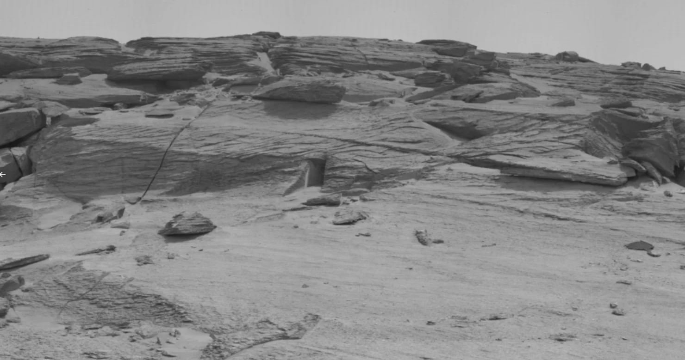
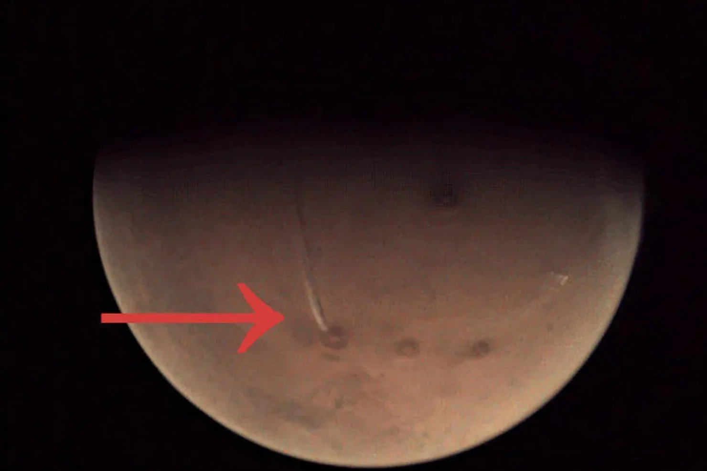
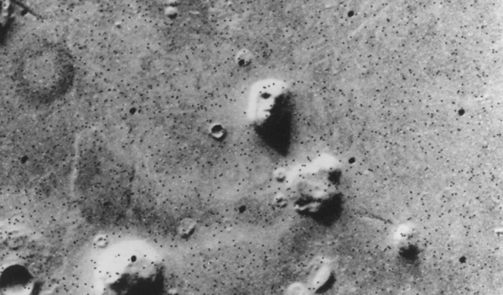

MARS ARCHIVE
Централізований архів даних планети Марс для місії "ARES"
GENERAL_INFO
PLANETARY_RECORDS
H2O_ANALYSIS
WEATHER_REPORT
MISSION_LOGS
ANOMALIES
GRAVITY_WELL
Гравітація на Марсі складає лише 38% від земної. Це означає, що людина може стрибати значно вище, а вантажі переносити легше.
X-FILES: Anomalous Discoveries
DATABASE_PATH: /ROOT/ARCHIVE/UNEXPLAINED_SIGNS/

"Портал" у скелі Гетьман
Геологічна структура, що спричинила світовий ажіотаж. Хоча на знімку об'єкт виглядає як вхід для гуманоїда, лазерне сканування підтвердило: це **ерозійний розлом**. Прямокутна форма — результат ідеального кута падіння тіні на природні шари пісковика.

Шлейф гори Арсія
Гігантський "дим", що тягнеться на 1500 км від згаслого вулкана. Попри вулканічний вигляд, це **орографічна хмара**. Вона виникає, коли вологі маси повітря стикаються з підніжжям гори та замерзають у високих шарах атмосфери, утворюючи крижаний слід.

Полярний "Охоронець"
Містична постать на південному полюсі. Аналіз показує, що "голова" ангела — це стародавній **ударний кратер**, а темний колір фігури обумовлений сумішшю піску та льоду, що оголилися під час сублімації (випаровування) замороженого діоксиду вуглецю.

Обличчя регіону Сідонія
Легенда космічної ери. Світова сенсація 1976 року виявилася лице **мезою** (столовою горою). Завдяки новітнім камерам ми знаємо: очі та рот — це просто пагорби та западини, які при низькому сонці створюють ілюзію людських рис.
CHRONOLOGY OF MARS EXPLORATION
SCANNING HISTORICAL DATA...
Перші очі людства
21 знімок, що розвіяв міфи про канали та цивілізації. Ми побачили мертву, вкриту кратерами пустелю, схожу на Місяць.
Mariner 9: Масштаб
Перший апарат на орбіті. Саме він відкрив **Valles Marineris** (велетенський каньйон) та вулкан **Олімп**, коли пил нарешті влігся.
Viking 1: Десант
Перша тривала робота на поверхні. Світ побачив перші панорами іржавих скель та рожевого марсіанського неба.
Епоха марсоходів
Від "мікрохвильовки" **Sojourner** до гіганта **Curiosity**. Доведено: Марс мав рідку воду, стабільні озера та органіку.
Perseverance & Ingenuity
Збір ґрунту для повернення на Землю та перші польоти гвинтокрила. Ми вчимося жити та працювати на іншій планеті.
NATURAL_SATELLITES_SCAN
PHOBOS
"Страх" // Об'єкт приреченийФорма: "Космічна картопля" 🥔. Нерівний, пухкий об'єкт, вкритий борознами.
Аномалія: Найближчий супутник у Сонячній системі. Сходить і заходить двічі на добу.
Кратер Стікні: Займає майже половину поверхні. Удар ледве не розколов супутник.
DEIMOS
"Жах" // Стабільна орбітаФорма: Гладкий та округлий. Вкритий товстим шаром пилу (реголіту), що приховує кратери.
Вид з Марса: Виглядає як дуже яскрава зірка. Рухається по небу повільно (30 годин).
Походження: Ймовірно, колишній астероїд, захоплений гравітацією Марса мільярди років тому.
[GRAVITY_CALC]
Скільки ти важитимеш на Марсі?
[MISSION_MARS_2030]
Наступний крок — висадка людини.
Мета: Створення автономної колонії.
Транспорт: Starship (SpaceX) або SLS (NASA).